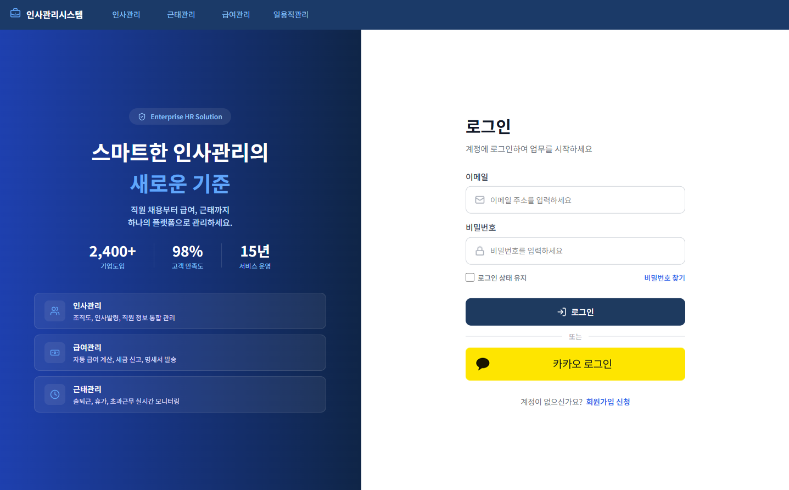

"기술은 목적이 아닌
수단이라 믿습니다."
대우능력개발원 생성형 AI 프론트엔드 개발자 과정을 통해 HTML/CSS/JS 기초부터 React, Next.js, 그리고 ChatGPT·Claude 등 AI 도구를 실무에 접목하는 방법까지 폭넓게 학습했습니다. 단순히 코드를 작성하는 개발자가 아닌, AI를 활용해 더 빠르고 창의적으로 문제를 해결하는 AI-Augmented Developer로 성장하고 있습니다.
집중 교육 과정 수료
팀·개인 프로젝트 완성
AI Tools I Use
AI를 단순 검색 도구가 아닌, 설계·구현·리뷰의 페어 프로그래머로 활용합니다.
What Drives Me
프론트엔드를 중심으로 AI 협업 도구까지 폭넓게 다룹니다.
Frontend Core
Design & Collaboration
학습하며 직접 기획하고 개발한 프로젝트들입니다.

기회가 생기면 편하게 연락 주세요. 성장하는 신입 개발자로서 최선을 다하겠습니다.
21dpflsdbs@gmail.com
GitHub
github.com/yerin0110
졸업 예정 2026
서울/경기 및 원격 근무 모두 가능하며, 프론트엔드 개발자 신입으로 지원 중입니다.